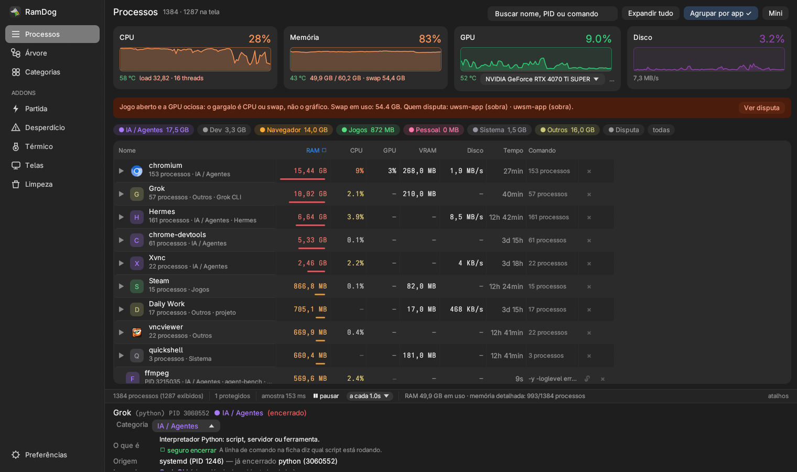
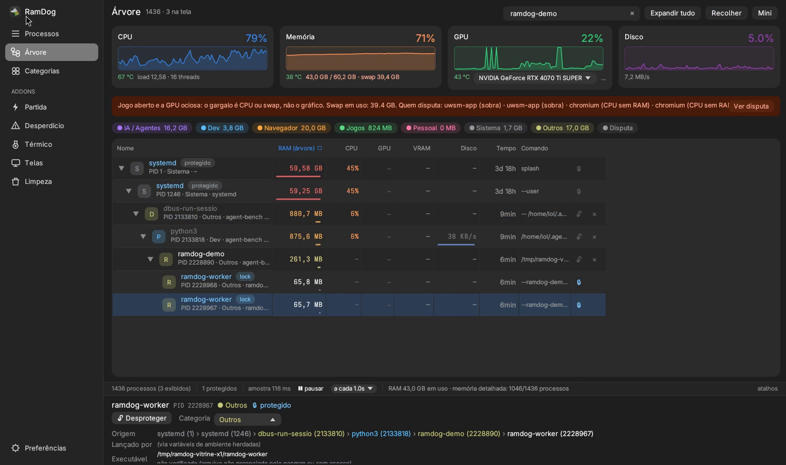
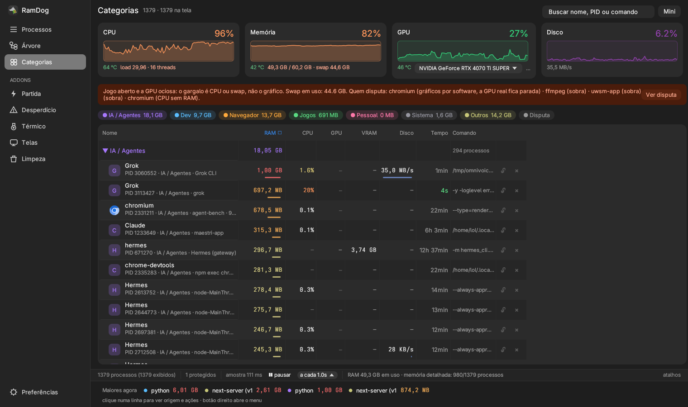
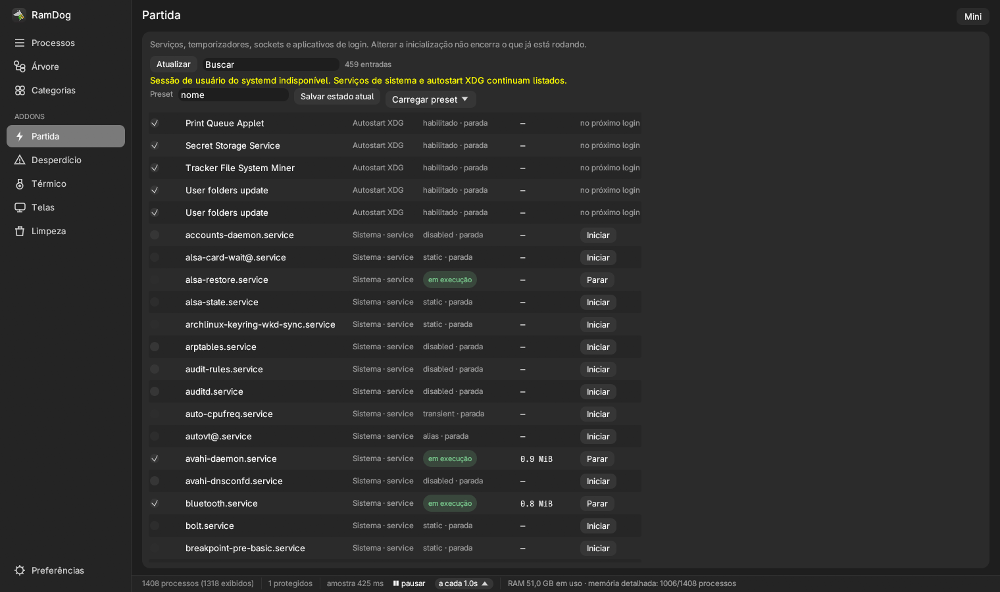
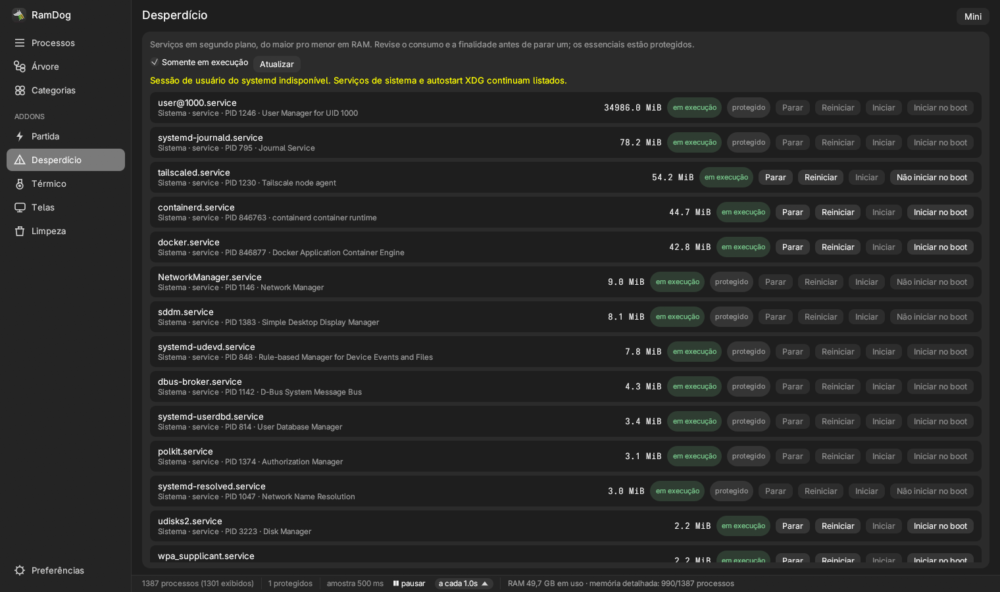
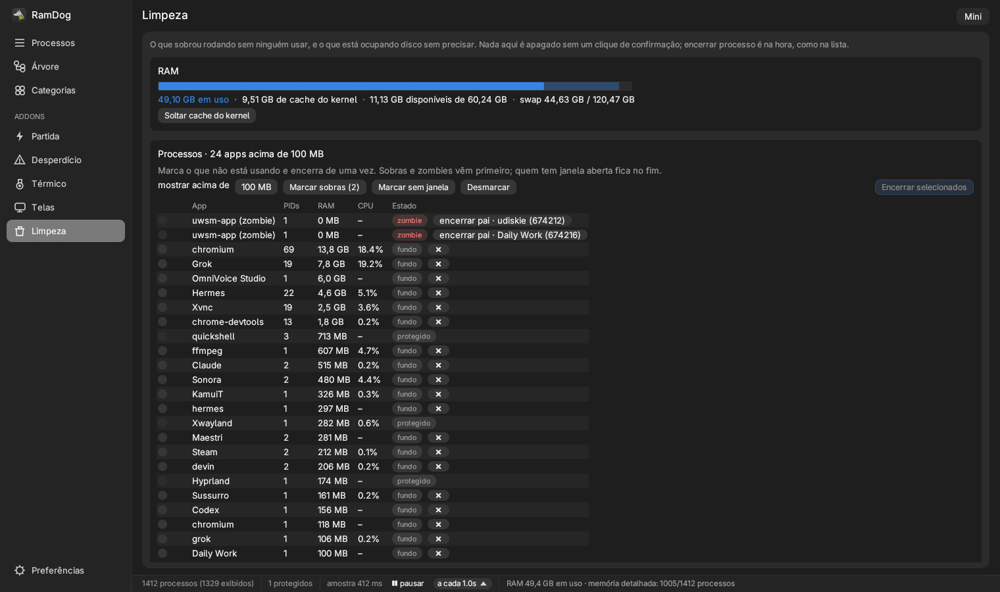
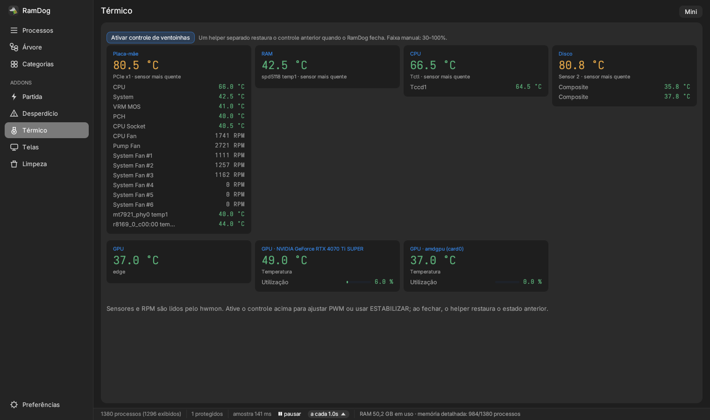
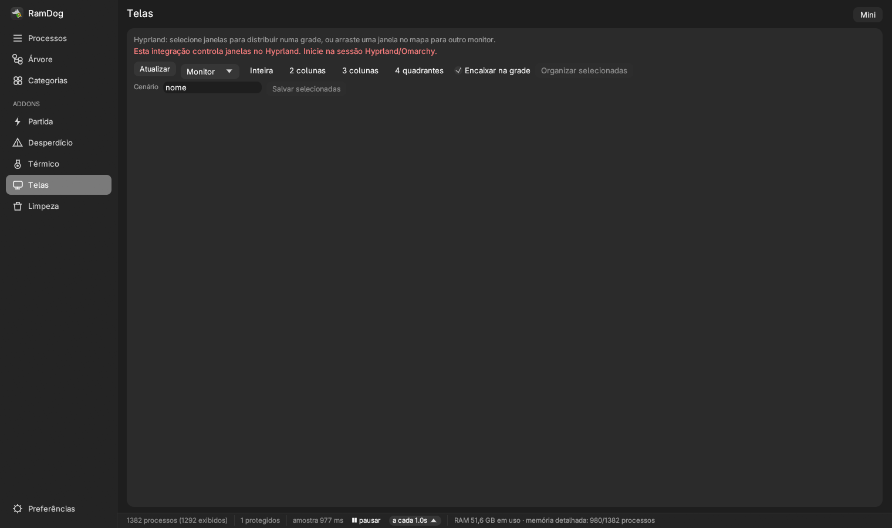

Quem abriu isso?
Veja ancestrais e pistas de agentes, editores e comandos herdados. Quando a cadeia de pais se perde, a origem pode ser deduzida pelo ambiente.
Gerenciador de processos · Código aberto
Descubra o que está consumindo sua máquina, quem abriu cada processo e o que pode encerrar. Tudo no mesmo lugar. No Linux, o alvo de primeira classe é o Omarchy.
WINDOWS · LINUX · macOS · OMARCHY / GRATUITO · MIT · v0.10.0
Guia completo · 24 capítulos
Aprenda a usar o RamDog no seu ritmo, com busca por recurso, legendas e transcrição em português.
v0.10.0 · Omarchy
Barra lateral, cards com histórico, tabela de linha dupla e o addon Limpeza (sobras na RAM, caches, pacman, journal, coredumps). Por baixo, o sampler em /proc que aguenta sessão longa e Hyprland/UWSM/Quickshell protegidos.

Veja ancestrais e pistas de agentes, editores e comandos herdados. Quando a cadeia de pais se perde, a origem pode ser deduzida pelo ambiente.
Agrupe por app, navegue pela árvore ou separe IA, Dev, Navegador e Jogos. Encontre o consumo dentro do seu fluxo de trabalho.
Finalize um processo ou sua árvore inteira. Proteja os que precisam continuar: o lock impede o encerramento pelo RamDog.
Um caminho direto
Os medidores mostram o estado da máquina. A lista ajuda a entender de onde ele vem.
Ordene por RAM ou CPU, filtre pelo nome e agrupe os vários processos de um mesmo aplicativo.
Abra os detalhes ou a árvore para entender quem lançou o processo e quais filhos vieram junto.
Trave o que precisa ficar. Encerre o processo ou a árvore pelo menu, pelo botão ou pelo teclado.
Por dentro do RamDog
Comece pelos processos. Vá além com inicialização, serviços, sensores e janelas. Cada visão responde a uma pergunta diferente.
Consumo, origem e categoria lado a lado. Processos do mesmo executável podem virar um grupo, com os recursos somados.

Veja a relação entre pais e filhos e a RAM da subárvore. Entenda a estrutura antes de encerrar um conjunto.

IA e agentes, Dev, Navegador, Jogos, Pessoal, Sistema e Outros. Classificação automática com ajuste manual por processo.

Além dos processos Recursos variam por sistema
Confira o que inicia com o computador e o que está rodando agora. No Linux, serviços systemd e autostart XDG.

Inspecione os serviços e seu estado. No Linux, inicie, pare ou ajuste a habilitação; no Windows, há integrações próprias.

Zumbis, sobras e apps parados em segundo plano para encerrar de uma vez. No disco: cache, lixeira, pacman, journal e coredumps, cada um com confirmação.
A Limpeza é só Linux por enquanto. Nada some sem um clique de confirmação. O que é do sistema passa por pkexec com operações fixas, sem receber caminho por argumento.

Acompanhe temperaturas e rotações disponíveis. Em controladores compatíveis, ajuste PWM ou use ESTABILIZAR.
No Linux, usa hwmon. O controle exige autenticação e suporte do driver; as ventoinhas da GPU ficam fora desse controle.

Organize janelas por monitor, encaixe em grades e salve cenários. As posições usam proporções para acompanhar mudanças de resolução.
A captura mostra o limite real da bancada X11: o backend de Telas no Linux precisa de Hyprland. No Omarchy, isso é o compositor padrão. Não está disponível em outros compositores ou no macOS.

Transforme o RamDog em um painel compacto de recursos. Deixe por cima das janelas e volte ao app inteiro com um duplo clique.
CPU, RAM, GPU, disco e leituras térmicas aparecem conforme a disponibilidade no sistema.
Medido nesta vitrine
7.699.736 bytes. Build release local em 15/09/2026, v0.10.0. Não é uso de RAM.
85,8 s medidos por ffprobe no master 1080p. Uso real e tour pelas telas da interface nova.
Ferramentas, lado a lado
O RamDog reúne contexto de processos e controles do sistema. A comparação abaixo considera funções documentadas, com os limites de cada plataforma.
| Aspecto | RamDog | Gerenciador de Tarefas | htop |
|---|---|---|---|
| Interface e plataformas | Gráfica. Windows, Linux e macOS, com recursos por sistema. | Gráfica, integrada ao Windows. | Texto no terminal. Linux, macOS e outros Unix. |
| Organizar processos | Lista, árvore, categorias IA/Dev e agrupamento por app. | Apps, processos, detalhes, usuários e serviços. | Lista, árvore, busca e filtros. |
| Inicialização | Windows: várias origens. Linux: systemd e XDG. | Apps de inicialização e impacto de partida. | Gestão de partida não descrita no manual consultado. |
| Contexto | Ancestrais e dedução pelo ambiente de agentes e hosts. | Guia documenta wait chain para dependências. | Árvore documentada de processos pais e filhos. |
| Limpeza de RAM e disco | Linux: sobras, zumbis, cache, lixeira, pacman, journal, coredumps. Com confirmação. | Não descrito no guia consultado. | Não descrito no manual consultado. |
Consulta em 15 de setembro de 2026. Comparação de funções documentadas, sem benchmark. Wait chain mostra dependências de espera, não necessariamente a origem pai-filho. Fontes: RamDog, guia Microsoft (12/02/2026), inicialização no Windows, htop e manual htop. Disponibilidade no RamDog varia por sistema, permissão e hardware.
Pronto para o seu computador
Escolha o comando do seu sistema ou baixe a release estável atual. Esta demonstração usa a v0.10.0, com a interface nova e o addon Limpeza. O código é aberto e a licença é MIT.
Baixar a última release Ver instruções completas e compilação →irm https://raw.githubusercontent.com/LucasOl1337/RamDog/main/install.ps1 | iexAbra pelo atalho RamDog ou pelo terminal. O app pede elevação ao iniciar; se ela não estiver disponível, abre com recursos limitados.
curl -sSfL https://raw.githubusercontent.com/LucasOl1337/RamDog/main/install.sh | shOmarchy é o desktop Linux de referência: Hyprland, UWSM, Quickshell, systemd e pacman. Binários exigem glibc 2.39+ e bibliotecas X11/Wayland. Telas exige Hyprland; serviços usam systemd; sensores e PWM dependem do hardware. Dependências e limites.
curl -sSfL https://raw.githubusercontent.com/LucasOl1337/RamDog/main/install.sh | shLista, categorias, origem, árvore e encerramento. Sem Desperdício, Telas, temperatura de CPU ou NVML. Se o Gatekeeper bloquear: Ajustes → Privacidade e segurança → Abrir mesmo assim.
Prefere revisar antes? Leia os instaladores Windows e Linux/macOS no repositório.
Ele impede que o RamDog encerre o processo, inclusive ao finalizar uma árvore. Processos críticos do sistema já são protegidos. O lock vale para ações feitas pelo RamDog; não impede encerramentos externos.
O encerramento é imediato. Use o lock para proteger o que deve continuar rodando. Enquanto o cursor está sobre a tabela, a ordem das linhas fica congelada para manter o alvo do clique no lugar.
O sistema, o driver ou as permissões podem não fornecer uma leitura. O RamDog mostra “—” quando ela não está disponível. Ausência de leitura não significa consumo zero.
O núcleo de processos funciona em Windows, Linux e macOS. As integrações seguem cada plataforma: Windows tem seus próprios controles; Linux usa systemd, hwmon e Hyprland; macOS tem um conjunto menor. Consulte os limites na documentação.
Sim. Omarchy (Arch + Hyprland) é o desktop Linux de referência. Hyprland, UWSM e Quickshell ficam protegidos contra encerramento, Telas usa o compositor nativo e o sampler da v0.9.1 foi validado em sessão longa nessa pilha, inclusive com NVIDIA no Wayland.
Windows, Linux, macOS — e nativo no Omarchy.